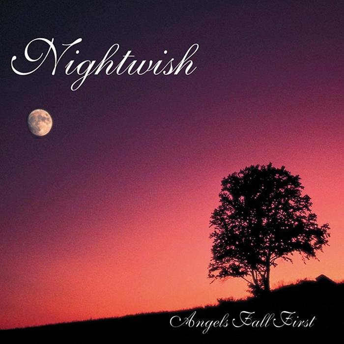

Discografía

Angels Fall First
- Elvenpath
- Beauty and The Beast
- The Carpenter
- Astral Romance
- Angels Fall First
- Tutankhamen
- Nymphomaniac Fantasia
- Know Why The Nightingale Sings
- Lappi (Lapland)
Oceanborn
- Stargazers
- Gethsemane
- Devil & The Deep Dark Ocean
- Sacrament Of Wilderness
- Passion And The Opera
- Swanheart
- Moondance
- The Riddler
- The Pharaoh Sails To Orion
- Walking In The Air
- Sleeping Sun
Wishmaster
- She Is My Sin
- The Kinslayer
- Come Cover Me
- Wanderlust
- Two For Tragedy
- Wishmaster
- Bare Grace Misery
- Crownless
- Deep Silent Complete
- Dead Boy’s Poem
- FantasMic
- Sleepwalker (Bonus Track)
Century Child
- Bless The Child
- End Of All Hope
- Dead To The World
- Ever Dream
- Slaying The Dreamer
- Forever Yours
- Ocean Soul
- Feel For You
- The Phantom Of The Opera
- Beauty Of The Beast
Once
- Dark Chest Of Wonders
- Wish I Had An Angel
- Nemo
- Planet Hell
- Creek Mary’s Blood
- The Siren
- Dead Gardens
- Romanticide
- Ghost Love Score
- Kuolema Tekee Taiteilijan
- Higher Than Hope
Dark Passion Play
- The Poet And The Pendulum
- Bye Bye Beautiful
- Amaranth
- Cadence Of Her Last Breath
- Master Passion Greed
- Eva
- Sahara
- Whoever Brings The Night
- For The Heart I Once Had
- The Islander
- Last Of The Wilds
- 7 Days To The Wolves
- Meadows Of Heaven
Imaginaerum
- Taikatalvi
- Storytime
- Ghost River
- Slow, Love, Slow
- I Want My Tears Back
- Scaretale
- Arabesque
- Turn Loose The Mermaids
- Rest Calm
- The Crow, The Owl And The Dove
- Last Ride Of The Day
- Song Of Myself
- Imaginaerum
Endless Forms Most Beautiful
- Shudder Before the Beautiful
- Weak Fantasy
- Élan
- Yours Is an Empty Hope
- Our Decades in the Sun
- My Walden
- Endless Forms Most Beautiful
- Edema Ruh
- Alpenglow
- The Eyes of Sharbat Gula
- The Greatest Show on Earth